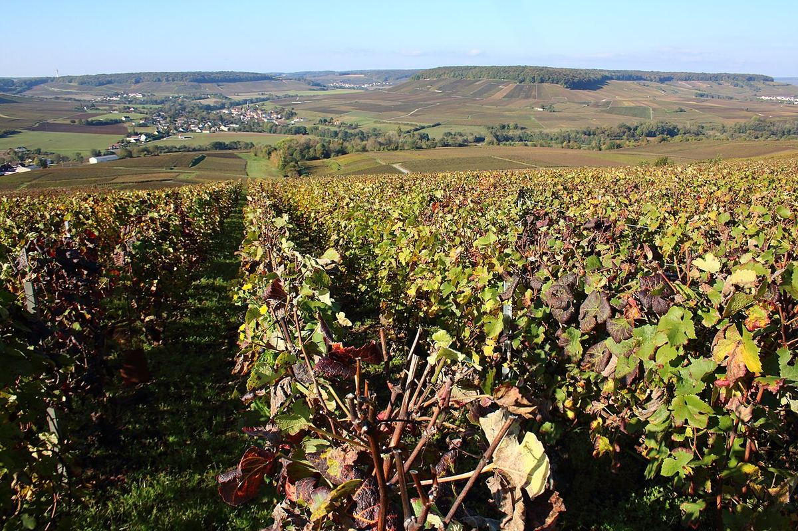

EFFERVESCENT
La Champagne, au nord-est de Paris, est la région qui a donné une renommée mondiale aux vins effervescents élaborés par seconde fermentation en bouteille. Ses vins reposent sur le chardonnay, le pinot noir et le meunier, cultivés sur un sous-sol de craie.

Pendant des siècles, la Champagne produisit surtout des vins tranquilles, appréciés à la cour de France. L'effervescence apparaissait spontanément lorsque la fermentation, interrompue par le froid hivernal, reprenait au printemps, et elle fut longtemps considérée comme un défaut. On attribue traditionnellement l'invention du champagne à Dom Pérignon, moine bénédictin de l'abbaye d'Hautvillers mort en 1715, mais on estime aujourd'hui que son apport principal fut d'améliorer l'assemblage et la vinification. Le champagne effervescent se développa aux XVIIIe et XIXe siècles, grâce à des bouteilles plus résistantes et à la création de maisons de négoce à Reims et à Épernay. Au début du XXe siècle, les conflits liés à la délimitation de l'aire provoquèrent les émeutes de 1911 ; l'aire fut délimitée en 1927 et reconnue en AOC en 1936. En 2015, les coteaux, maisons et caves de Champagne ont été inscrits au patrimoine mondial de l'UNESCO.
Les principales zones sont la Montagne de Reims, la Vallée de la Marne, la Côte des Blancs et la Côte de Sézanne, dans la Marne, ainsi que la Côte des Bar, dans l'Aube. Le climat, à la limite septentrionale de la culture de la vigne, associe influences océaniques et continentales, avec des températures moyennes basses et un risque de gel. Le raisin mûrit difficilement et conserve une acidité élevée, idéale pour l'élaboration de vins effervescents. Une grande partie du vignoble marnais repose sur un sous-sol de craie, qui draine bien tout en retenant l'humidité ; dans la Côte des Bar dominent les marnes du Kimméridgien. Les anciennes carrières de craie, les crayères, servent de caves.
Les trois principaux cépages sont le pinot noir, qui apporte corps et structure ; le meunier, qui donne des vins fruités et est très cultivé dans la Vallée de la Marne ; et le chardonnay, dominant dans la Côte des Blancs, qui apporte finesse et fraîcheur. Un blanc de blancs est issu uniquement de raisins blancs, un blanc de noirs uniquement de raisins noirs.
On élabore d'abord un vin de base, souvent assemblé avec des vins de réserve d'années antérieures. Après la mise en bouteille avec la liqueur de tirage, un mélange de vin, de sucre et de levures, la seconde fermentation se produit en bouteille et crée le gaz carbonique. Le vin repose ensuite sur ses lies : au moins 15 mois à compter du tirage pour les champagnes non millésimés, dont 12 sur lies, et au moins trois ans pour les millésimés. Après le remuage et le dégorgement, qui éliminent le dépôt, on ajoute la liqueur d'expédition, dont la teneur en sucre détermine des mentions comme brut nature, extra brut, brut, extra dry, sec, demi-sec ou doux.
La région produit aussi des vins tranquilles sous l'appellation Coteaux Champenois et un rosé tranquille, le Rosé des Riceys. Dix-sept communes portent la mention grand cru.